사례 정보
남천 엑슬루타워
부산 남천동 엑슬루타워 56평 아파트 리모델링 사례입니다. 따뜻하고 정돈된 분위기, 밝은 바탕 위의 절제된 포인트라는 요청에서 출발해 주방·현관·복도·욕실의 사용 장면을 하나의 흐름으로 구성했습니다. 이 현장은 당시 7주간 진행한 사례로 공식 기록에 남아 있습니다.
유형아파트
위치부산 남천동
평형56평
사진완성 공간 기록
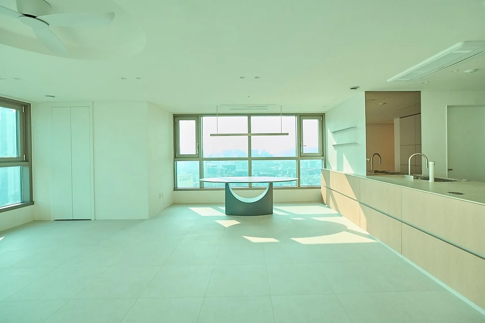
부산 남천동 엑슬루타워 56평 아파트 리모델링 사례입니다. 따뜻하고 정돈된 분위기, 밝은 바탕 위의 절제된 포인트라는 요청에서 출발해 주방·현관·복도·욕실의 사용 장면을 하나의 흐름으로 구성했습니다. 이 현장은 당시 7주간 진행한 사례로 공식 기록에 남아 있습니다.
공간보감 · 현장 설계 기록
고객의 요청에서 기존 공간의 문제, 설계와 마감, 완성된 디테일까지 공식 현장 기록을 바탕으로 정리했습니다.
01 · 고객 요구
집 전체에는 따뜻한 분위기를 담되, 군더더기 없이 정리하고 밝은 바탕 위에 필요한 곳만 포인트를 두는 것이 요청의 중심이었습니다.
생활의 불편으로는 좁게 느껴지는 주방이 분명하게 제시됐습니다. 이 문제를 해결하는 일이 공용부 구성의 출발점이 됐습니다.
02 · 기존 공간의 문제
거실과 주방이 마주한 구조에서 주방 자체는 좁게 느껴졌습니다. 공간을 단순히 나누기보다, 대면 구조가 가진 연결감을 살리면서 주방의 중심을 다시 잡아야 했습니다.
긴 현관은 신발을 신고 벗는 동작까지 고려해야 했고, 자연광이 끝까지 드는 긴 복도에는 과하지 않은 간접조명으로 빛의 흐름을 더했습니다.
03 · 설계 방향
따뜻하고 밝되 과하지 않은 전체 방향에 맞춰, 이 현장은 디아망 회벽과 마블러스 젠 제품을 사용한 마감으로 구성했습니다.
주방에 중심을 두는 대신 거실은 단순하게 정리하고 필요한 포인트만 남겼습니다. 공용부의 요소가 서로 경쟁하기보다, 주방·거실·복도가 하나의 장면으로 이어지도록 균형을 잡았습니다.
04 · 공간별 디테일
길게 이어진 현관에는 부츠나 구두를 신을 때 쓸 벤치를 두고, 주변 톤과 맞춘 세라믹과 위치별 조명으로 진입 공간을 완성했습니다. 복도는 디아망 회벽 라인과 간접조명을 연결해 거실로 이어지는 분위기를 만들었습니다.
주방은 기존 공간을 넓혀 5m가 넘는 아일랜드를 배치하고 수납을 더했습니다. 아일랜드가 벽을 감싸는 구성으로 확장감과 주방의 중심성을 함께 다뤘고, 안방으로 이어지는 주방 옆 면에는 커피 머신을 둘 수 있는 홈바 장을 구성했습니다. 홈바에는 밤에도 눈부심을 줄이도록 간접조명을 활용했습니다.
공용욕실은 개방감을 원한 요청에 맞춰 세면대와 액세서리 위치를 현장에서 조율했습니다. 안방욕실은 묵직한 톤을 바탕으로 은은한 분위기를 의도했으며, 이 페이지의 사진은 공용욕실만 담고 있습니다.
05 · 자재와 공정
공식 현장 기록에는 디아망 회벽과 마블러스 젠 제품이 이 사례의 당시 마감으로 남아 있습니다. 현관에는 세라믹을, 공용욕실에는 타일을 사용해 각 공간의 분위기와 사용성을 연결했습니다.
주방은 기존 공간을 넓힌 뒤 아일랜드와 수납을 함께 구성했고, 욕실은 세면대와 액세서리 위치를 현장에서 조율했습니다.
06 · 완성 결과
완성된 공간은 현관의 벤치와 조명, 복도의 회벽과 간접조명, 주방의 긴 아일랜드와 수납, 거실의 절제된 포인트를 하나의 흐름으로 연결합니다.
공용욕실은 작은 세면대와 위치 조율로 개방감을 확보하는 방향으로, 안방욕실은 묵직한 톤의 은은한 분위기로 마무리했습니다.
07 · 설계 의도
이 현장은 마감을 바꾸는 데 그치지 않고, 실제 생활 방식과 공간을 쓰는 동선, 가구가 놓이는 자리를 함께 고려해 구성했습니다.
따뜻함과 정돈이라는 요청을 주방의 확장, 거실의 절제, 긴 현관과 복도의 빛, 사용자에게 맞춘 욕실 배치로 나누어 풀어낸 것이 이 사례의 설계 의도입니다.
현관에서 주방·거실·공용욕실까지, 현장의 주요 디테일을 살펴보세요.
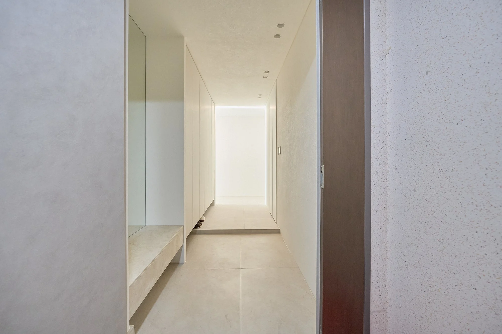
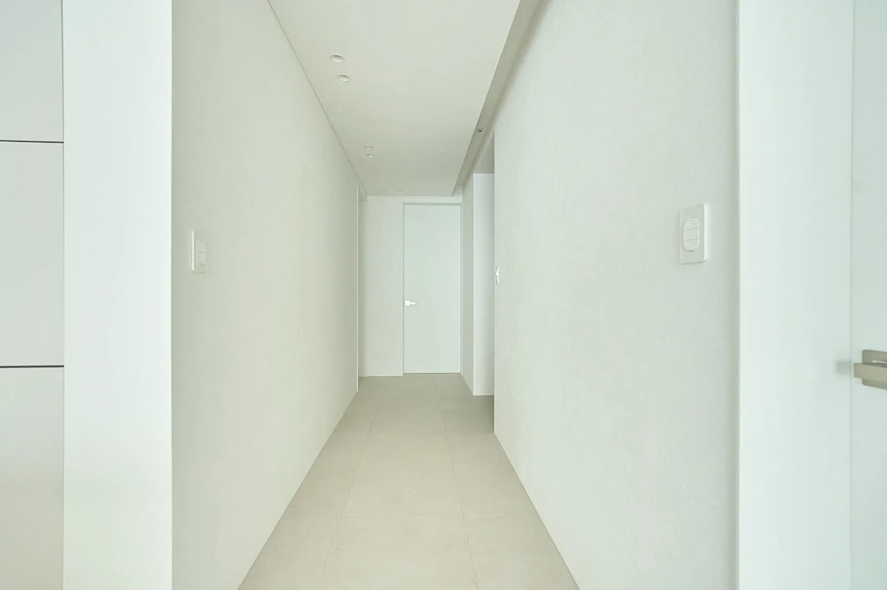
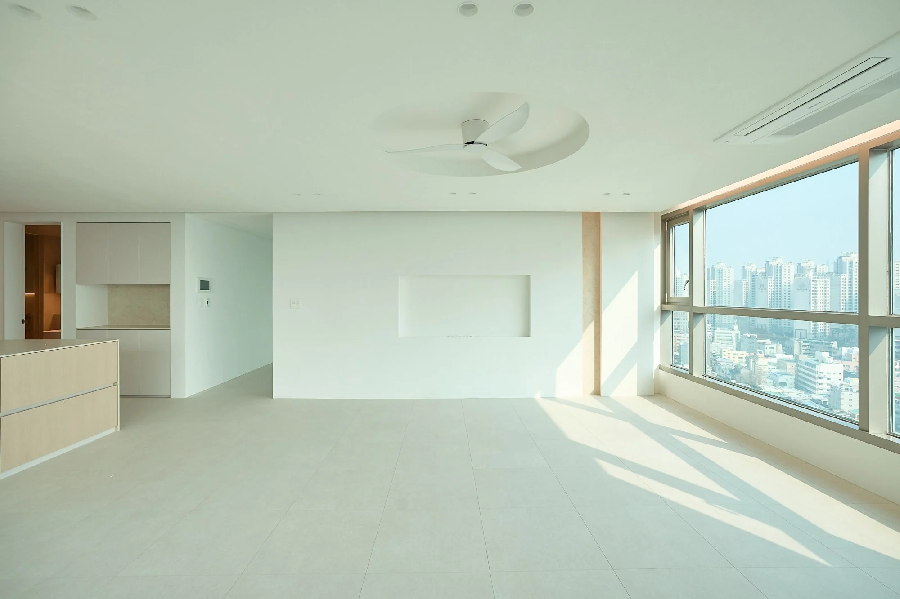
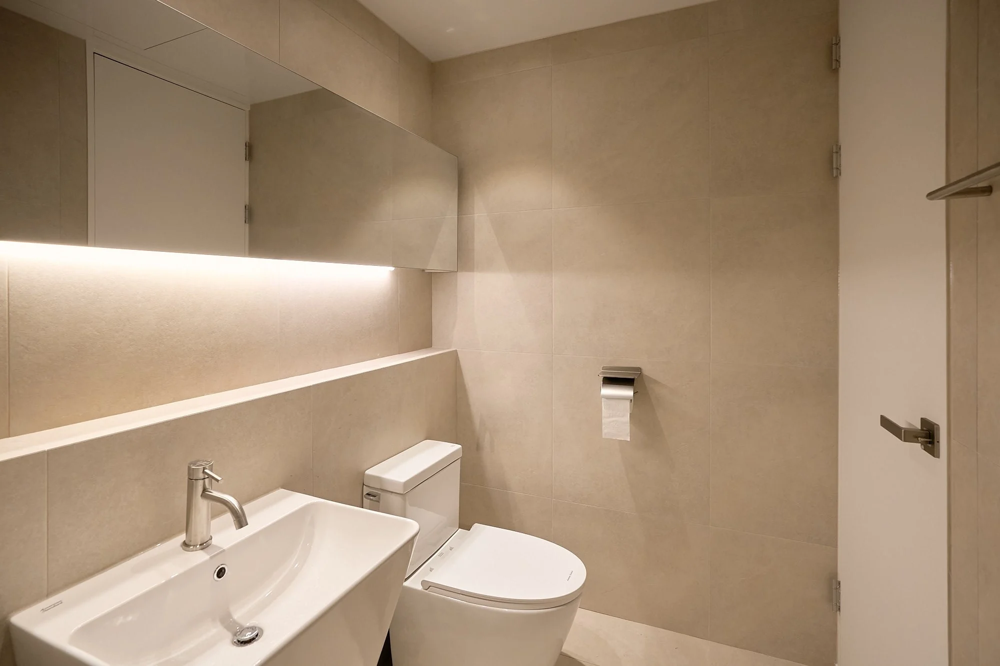
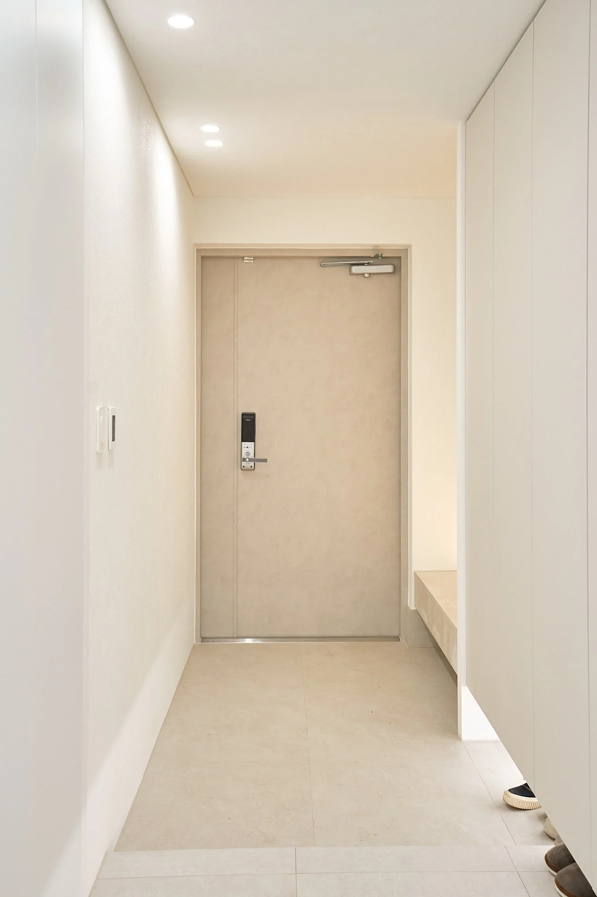
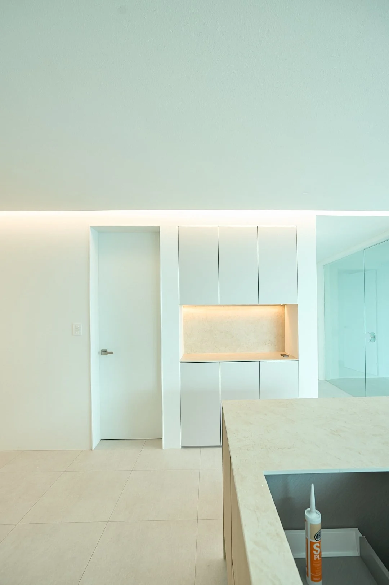
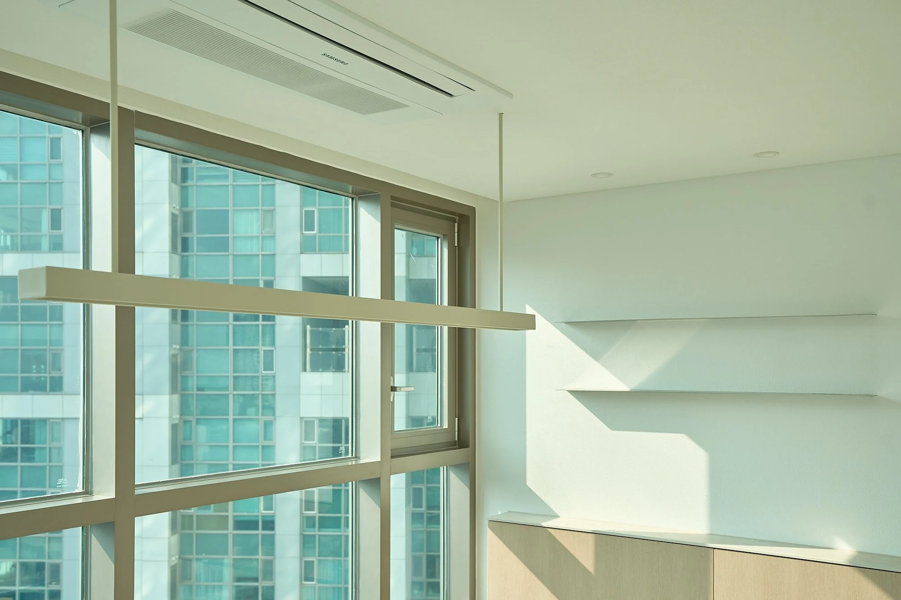
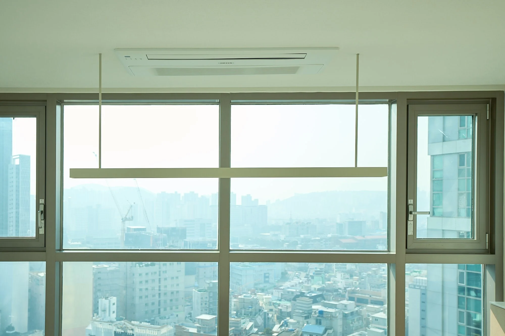
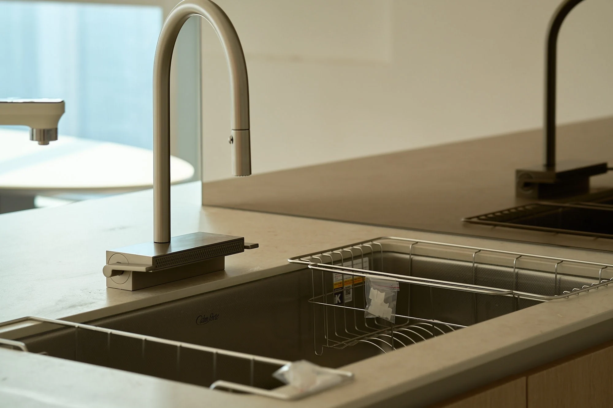
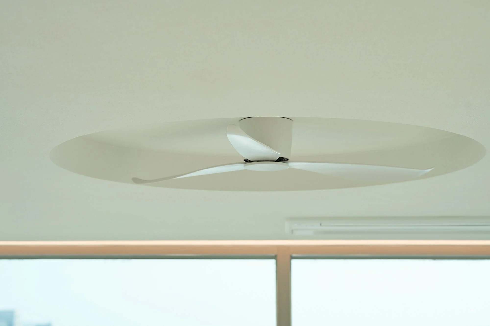
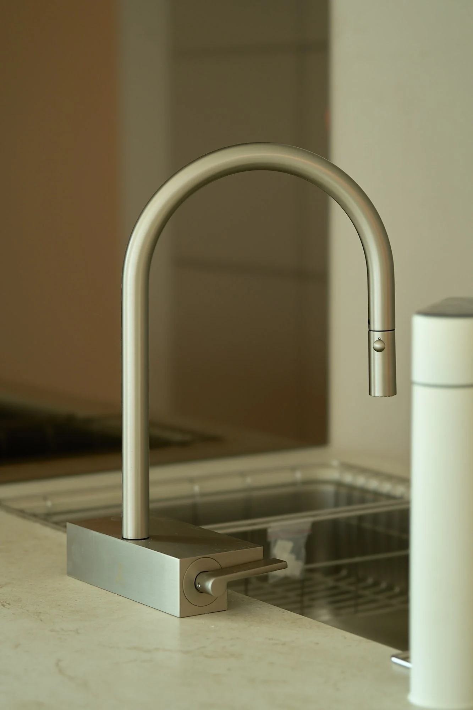
비슷한 조건을 고민 중이라면, 이 세 장면을 기준으로 상담을 시작할 수 있습니다.
좁게 느껴지던 주방을 넓힌 뒤, 수납을 갖춘 긴 아일랜드로 조리·수납·공용부의 중심을 만들었습니다.
현관 벤치와 위치별 조명, 복도의 회벽 라인과 간접조명으로 진입부터 거실까지 흐름을 연결했습니다.
공용욕실은 개방감과 사용자의 동작을 함께 보고 세면대·액세서리 위치를 현장에서 조율했습니다.